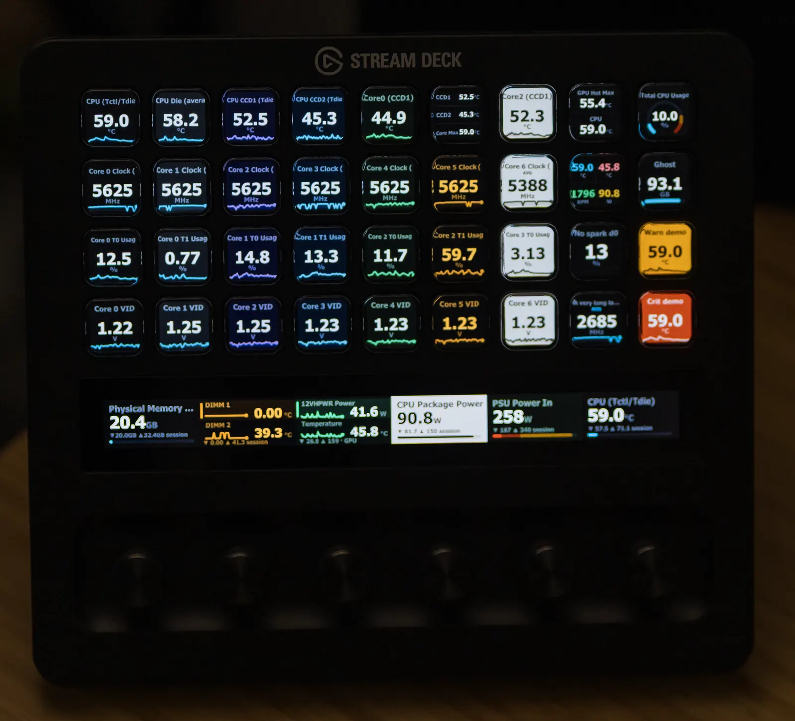

HWiNFO Sensors for Stream Deck
Released · version 1.6.0, 5 Sep 2026 · Windows



- The problem editorial
- HWiNFO measures nearly everything in a Windows PC, but reading it means another window. A Stream Deck already has a screen under every key.
- What was built
- Live HWiNFO readings on keys: temperatures, clocks, fans, usage, power.
- One to four readings per key; dials on the Stream Deck + and + XL.
- Seven themes, including a high-contrast light one.
- Amber and red alerts that look the same on every theme.
- A clear status screen, not a stale number, when HWiNFO stops.
- Where to inspect it
- Source (MIT) · Documentation · Release notes
Install requirements and three steps
You need
- System
- Windows 10 or later, 64-bit
- App
- Stream Deck 6.9 or later
- Readings
- HWiNFO, free or Pro, with Shared Memory Support or Gadget reporting
- Dials
- Stream Deck + or + XL (keys work on any model)
Steps
- Install from the Elgato Marketplace, or double-click the
.streamDeckPluginfrom GitHub Releases. - In HWiNFO's settings, tick Shared Memory Support. Run HWiNFO and the Stream Deck app at the same privilege level.
- Drag Sensor Reading onto a key and pick a sensor.
Free HWiNFO turns Shared Memory off after 12 hours; with Gadget reporting on, the plugin falls back and recovers by itself. HWiNFO is a separate program by REALiX.
Evidence what is verified, measured and checkable
Hardware, at four levels of confidence
- Physically verifiedStream Deck + XL: 36 keys and 6 dials on the real device.
- SDK simulatedStream Deck +, 15-key, MK.2: driven end to end against a mock Stream Deck.
- Community verifiedNone yet; hardware reports are welcome.
- With limitationsXL, Mini, Neo, Mobile and others, with the caveats listed in the matrix.
Failure states it shows


Measured: one poll of 548 live readings decodes in 8.5 µs on average over 1,000 runs, on one machine (PERF.md). Checkable: the native bridge is unsigned, so each release publishes SHA-256 hashes (SECURITY.md). Private: the plugin makes no network requests; its only connection is to the local Stream Deck app.
Documentation and help docs, troubleshooting, issues
- Documentation: every key and dial setting, themes, thresholds, data sources.
- Troubleshooting and the FAQ.
- GitHub Issues for bugs and questions, answered in the open.
- Security reports go privately through GitHub advisories.